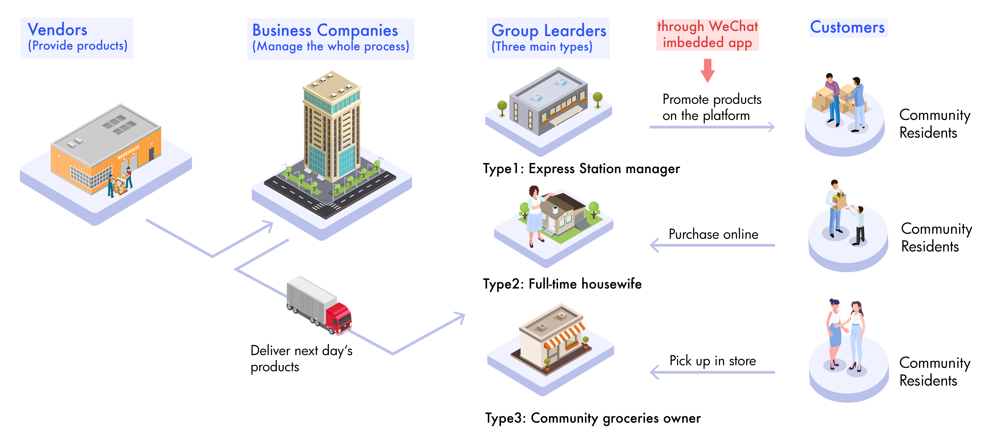

DiDi Select | Arrival Notice Flow Redesign
Backgroud
Stakeholders in the Group Purchasing Business Model
As a startup project of DiDi that is designed to allow a group of residents within the same community to buy daily necessities together with less face-to-face contact and lower prices, DiDi Select has an average of 1.07 million daily active group leaders. While employed, I focused on improving the user experience of the app on the group leader's side.
In the group purchase business, we seek a high turnover rate to keep fresh foods in a good condition.
Group leaders are the last node on this chain. In order to enable the group leaders to timely notify their customers after receiving the daily goods, we provide the Function of Arrival Notification on the app.